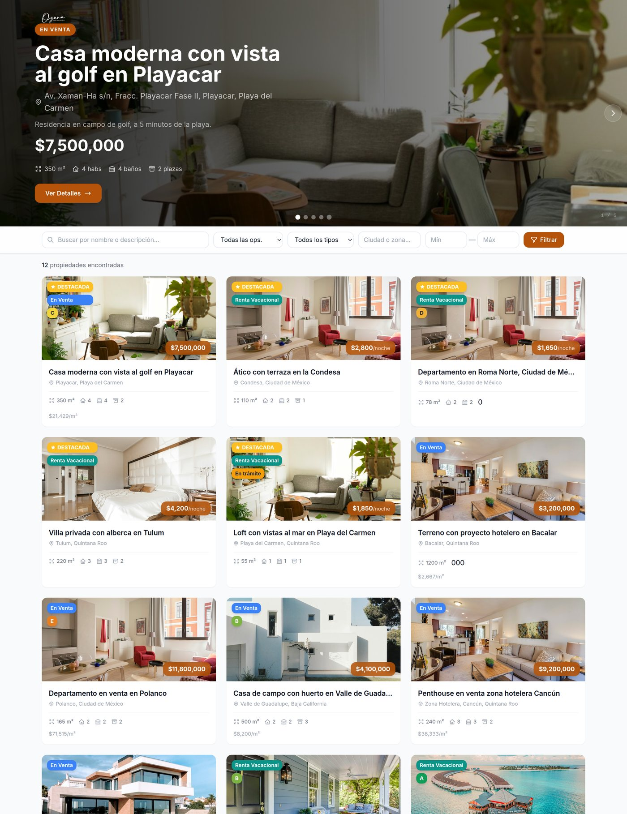
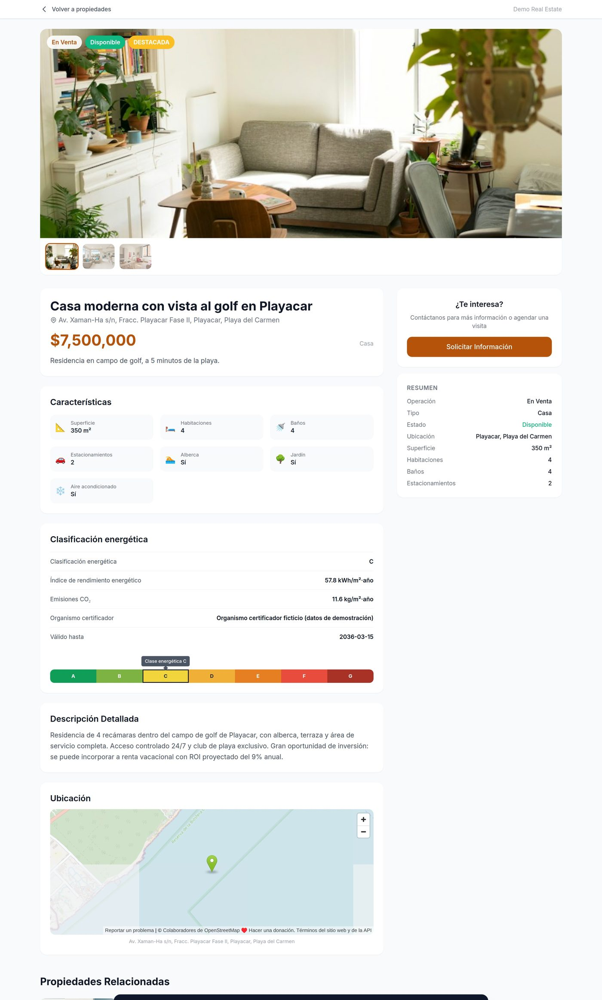
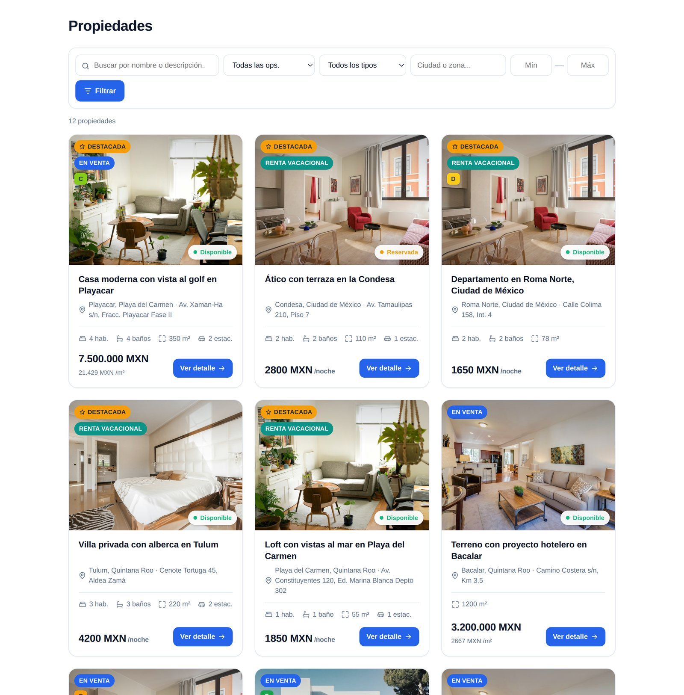
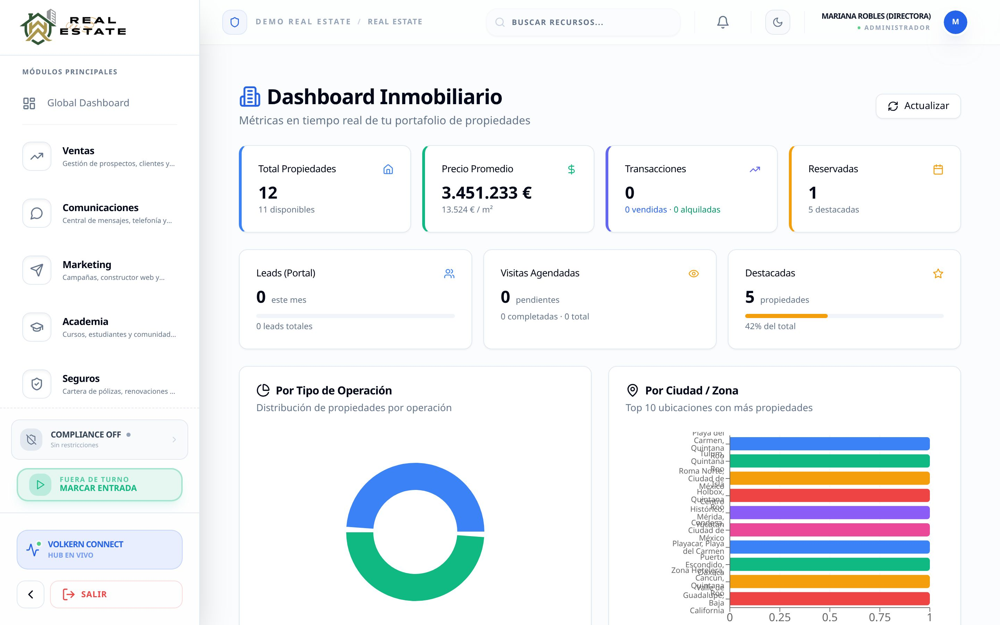
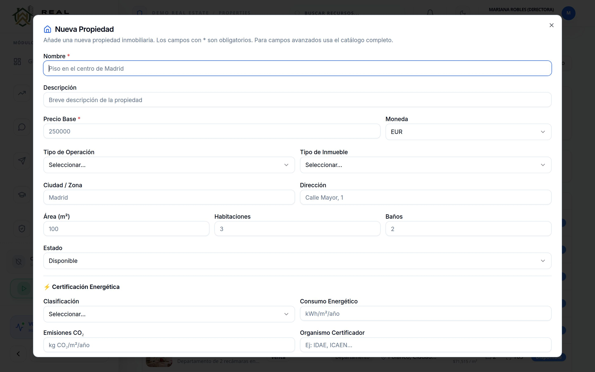
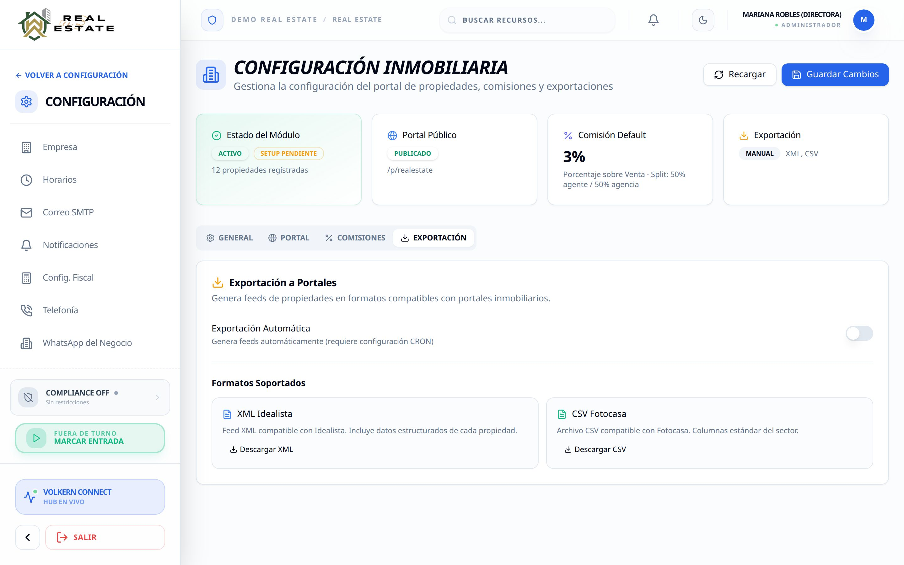

Dossier comercial · Noviembre 2026
Toda la operación inmobiliaria, en un solo lugar.
Propiedades, interesados, visitas, documentación y comisiones en la misma plataforma.
Con su marca, su portal y su forma de trabajar: sin saltar entre el Excel, el móvil
y cinco herramientas más.
Portal público con su marca
CRM de interesados y visitas
Ficha con mapa y WhatsApp
Comisiones y exportación a portales
Volkern · CRM Real EstateEl punto de partida
El punto de partida
El día a día, tal y como
suele ser
Ninguna agencia se rompe por una propiedad mal publicada. Se desgasta por la suma de
pequeños roces que nadie tiene tiempo de arreglar.
01
La ficha vive en tres sitios
El Excel del equipo, la carpeta de fotos y el mensaje de WhatsApp. Cuando cambia el precio, alguien lo descubre una semana después.
02
La consulta llega y espera
Un interesado escribe el domingo por la noche. El lunes hay veinte mensajes y ya nadie recuerda quién preguntó por qué.
03
Publicar es un trabajo en sí mismo
La misma propiedad reescrita para la web, para el portal y para el CSV. Copiar, pegar, corregir y repetir con cada cambio.
04
El cierre se reconstruye a mano
Comisión, reserva y reparto entre agente y oficina. Se calcula al final, con calculadora y buena memoria.
«Por separado, cada roce se aguanta. Juntos son la razón por la que un equipo
deja de crecer aunque tenga más propiedades que nunca.»
Lo que nos cuentan los equipos antes de empezar
Sin drama
Casi nunca es falta de herramientas. Es que la propiedad, el interesado y el cierre
viven en sistemas que no se hablan entre sí, y el equipo hace de puente a mano.
Volkern · CRM Real EstateLa propuesta
La propuesta
Una sola ficha.
Todo el recorrido.
Volkern CRM Real Estate reúne en una misma plataforma lo que normalmente vive repartido
entre un CRM, una web, una hoja de cálculo y el móvil de cada comercial. Se capta una vez,
se publica en todos los canales y se sigue al interesado hasta el cierre.
Captación
Una ficha que no se duplica
Catálogo con fotos, características, certificación energética, ubicación y campos propios de su operación. Se edita una vez y el cambio aparece en todas partes.
Publicación
Un portal con su marca
Web pública de propiedades con buscador, filtros y ficha completa, en su subdominio o integrada en la web que ya tiene.
Seguimiento
Cada consulta, en su sitio
La consulta entra al CRM con la propiedad y el canal de origen. Visitas, pipeline, tareas e historial en la ficha del interesado.
Cierre
Sin calculadora ni hojas aparte
Comisión con reparto agente/oficina, exportación a portales y documentación ligada a la operación desde el primer día.
HoyCon Volkern
Propiedad
Tres versiones en tres sitios
Una ficha, un cambio que llega a todas partes
Consulta
Bandeja personal, sin contexto
Interesado con propiedad, canal e historial
Publicación
Web, portal y CSV por separado
Un alta publicada en todos los canales
Comisión
Calculadora al cerrar
Reparto calculado y ligado a la operación
Sin retoques
A partir de aquí, todo son capturas de la demo: sin renders, sin maquetas y sin
pantallas reconstruidas para la ocasión.
01 · Captación y publicaciónPortal público
01 · Captación y publicación
Su catálogo, con la imagen
de su marca

Portal público de la demo · volkern.app/p/demo-real-estate/propiedades
Buscar
Buscador y filtros por operación, tipo y zona. El resultado se actualiza sin recargar la página.
Leer de un vistazo
Cada tarjeta muestra estado, certificación y precio. Lo destacado se reconoce sin abrir la ficha.
No salir de su web
La ficha se abre dentro del mismo portal, con su logotipo y su dominio.
Una sola fuente
El portal no es un folleto aparte: es la misma ficha que el equipo actualiza en el
panel. Se guarda una vez y el cambio aparece aquí.
02 · La ficha del inmuebleDetalle público
02 · La ficha del inmueble
Todo lo que el cliente pregunta,
antes de preguntarlo

Ficha real de la demo · Casa en Playacar
- Galería completa: foto principal y miniaturas, sin salir de la ficha.
- Características y superficies en bloques escaneables, no en un párrafo.
- Certificación energética con escala, consumo y emisiones, cuando el inmueble la tiene.
- Ubicación con mapa y enlace para abrir la ruta en el móvil del interesado.
- Contacto inmediato: formulario y WhatsApp directo al número del negocio.
- Inmuebles relacionados para alargar la visita en lugar de perderla.
Cada inmueble enseña solo lo que tiene cargado: si no hay coordenadas, no aparece
un mapa vacío; si no hay certificado, no queda un hueco.
Enlace directoLa ficha se comparte por WhatsApp o correo, sin perder el contexto.
Sin huecos vacíosSi falta el certificado o las coordenadas, la sección no se pinta.
Igual en el móvilEl interesado la abre desde el anuncio y ve lo mismo.
03 · Su webWidget embebible
03 · Su web
El catálogo dentro de su web,
en dos líneas
Si ya tiene web, no hace falta cambiarla. Se inserta el widget donde quiera mostrar las
propiedades y el catálogo se actualiza solo desde el panel, con los mismos filtros,
la misma ficha, el mapa y el WhatsApp.

Widget con datos de la demo, incrustado en una página cualquiera
<script src="https://volkern.app/propiedades-embed.js"
data-tenant-id="SU_CUENTA"></script>
<div id="volkern-propiedades"></div>
- Mismo catálogo y mismos filtros que el portal, sin duplicar contenido.
- Ficha completa incluida: galería, certificación, mapa y WhatsApp.
- Cero mantenimiento: al publicar una propiedad en el panel, aparece en su web.
Sin tocar su diseñoEl widget hereda la tipografía y el ancho del contenedor donde se coloca.
Con su WhatsApp de negocioEl botón usa el número de su agencia; el interesado escribe al equipo, no a un buzón.
Actualizado al publicarNo hay que volver a pegar el código cada vez que cambia el catálogo.
04 · El panel del equipoOperación diaria
04 · El panel del equipo
La operación a la vista,
sin abrir cinco pestañas

Dashboard: cartera, precio medio, leads del portal, visitas y propiedades destacadas.

Propiedades: estados, búsqueda, filtros y acceso a la ficha del propietario desde la propia fila.
05 · Publicar, exportar, repartirCierre de la operación
05 · Publicar, exportar, repartir
Del alta al reparto,
sin hojas aparte

Alta de una propiedad: datos, ubicación, superficies y certificación energética en un solo formulario.

Exportación XML compatible con Idealista y CSV compatible con Fotocasa.

Comisión por porcentaje, importe fijo o suscripción, con reparto agente/oficina.
Los campos del inmueble no están cerrados: cada agencia añade los suyos (orientación,
año de construcción, gastos de comunidad, lo que use de verdad) sin tocar código.
06 · En marchaUn día con Volkern
06 · En marcha
Un lunes cualquiera
con Volkern
09:00
Alta de la propiedad desde el móvil. Datos, fotos y certificación energética. Al guardar, ya está publicada en el portal y en la web de la agencia.
11:30
Entra una consulta desde la ficha. Llega al CRM con la propiedad, el canal de origen y el mensaje del interesado. Nada se queda en una bandeja personal.
13:00
Se agenda la visita desde la ficha del interesado. Queda en su historial y en el pipeline, con la etapa y el responsable.
17:00
Recordatorio automático. El interesado recibe el aviso; el agente abre la ficha completa antes de salir, sin buscar en el correo.
Semana 2
Oferta registrada. El pipeline refleja el estado real de la operación y quién tiene que hacer qué.
Cierre
Comisión calculada y repartida. La documentación queda ligada a la operación: no hay que reconstruir nada meses después.
El ejemplo es un recorrido típico, no una promesa de plazos: cada agencia ajusta etapas,
responsables y automatizaciones a su forma de vender.
No se duplica la fichaUna edición, todos los canales.
No se pierde una consultaCada interesado queda con su inmueble.
No se recalcula el cierreEl reparto nace de la propia operación.
Volkern · CRM Real EstateSiguiente paso
Siguiente paso
Empezar no exige
mudar su operación
No hay que cambiar de web, ni renombrar propiedades, ni reescribir el catálogo a mano.
Se importa lo que ya tiene y se configura lo que le hace distinto.
01
Importamos su catálogo desde CSV o XML, con fotos y datos existentes.
02
Configuramos su marca: portal, dominio, colores y los campos propios de sus inmuebles.
03
Ajustamos comisiones y etapas del pipeline a cómo trabaja hoy el equipo.
04
Formamos al equipo en una sesión y acompañamos la primera semana de uso real.
Volkern es una plataforma multi-agencia: cada cuenta ve solo su catálogo, sus interesados
y sus números. Las agencias con varias oficinas pueden trabajar con permisos por equipo.
Lo que no hace falta
Cambiar su web actual
Contratar un desarrollo aparte
Mudar el dominio
Reescribir el catálogo a mano
«No se trata de añadir otra herramienta. Se trata de que la que ya usa
el equipo deje de tener costuras.»
El criterio con el que diseñamos cada pantalla
¿Lo ve con sus propios datos?
Preparamos una demostración guiada con su catálogo y su marca, para que el equipo
reconozca su día a día en la pantalla y no un ejemplo genérico.
Hablemos
ventas@volkern.com
volkern.app